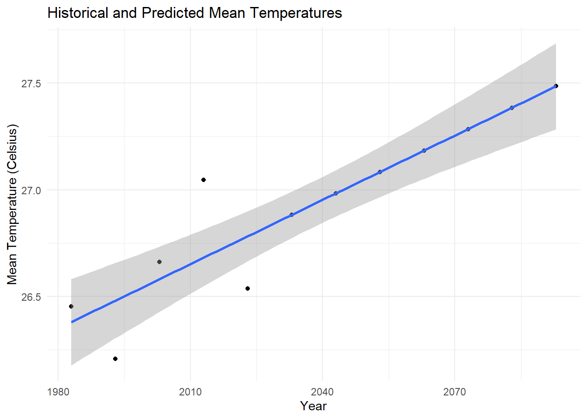

Code
pacman::p_load(tidyverse, ggiraph, ggstatsplot, patchwork, plotly, DT, crosstalk)February 14, 2024
February 19, 2024
The objective of this exercise is to create an analytics-driven data visualization to validate the claims that daily mean temperatures are projected to increase by 1.4 to 4.6. To achieve this, we will employ techniques of visual interactivity and uncertainty visualization.
The historical daily temperature datasets were downloaded from Meteorological Service Singapore website, consisting of daily mean temperatures recorded for January in the year 1983, 1993, 2003, 2013, and 2023 at the Changi weather station.
In this exercise, we use p_load() of pacman package to load required R packages. The packages that will be used are:
tidyverse
ggstatsplot
ggiraph
The downloaded datasets consist of five separate CSV files. The code chunk below imports all the five files into R environment by using read_csv() function of readr package.
data_1983 <- read_csv("data/DAILYDATA_S24_198301.csv",locale=locale(encoding="latin1"))
data_1993 <- read_csv("data/DAILYDATA_S24_199301.csv",locale=locale(encoding="latin1"))
data_2003 <- read_csv("data/DAILYDATA_S24_200301.csv",locale=locale(encoding="latin1"))
data_2013 <- read_csv("data/DAILYDATA_S24_201301.csv",locale=locale(encoding="latin1"))
data_2023 <- read_csv("data/DAILYDATA_S24_202301.csv",locale=locale(encoding = "UTF-8"))Next, we will merge the data and save the resulting object to an RDS file, which will then be loaded into the working environment.
# A tibble: 6 × 16
Station Year Month Day `Daily Rainfall Total (mm)` Highest 30 Min Rainfal…¹
<chr> <dbl> <dbl> <dbl> <dbl> <chr>
1 Changi 1983 1 1 0.3 "\u0097"
2 Changi 1983 1 2 0.4 "\u0097"
3 Changi 1983 1 3 2.9 "\u0097"
4 Changi 1983 1 4 0 "\u0097"
5 Changi 1983 1 5 0 "\u0097"
6 Changi 1983 1 6 0 "\u0097"
# ℹ abbreviated name: ¹`Highest 30 Min Rainfall (mm)`
# ℹ 10 more variables: `Highest 60 Min Rainfall (mm)` <chr>,
# `Highest 120 Min Rainfall (mm)` <chr>, `Mean Temperature (°C)` <dbl>,
# `Maximum Temperature (°C)` <dbl>, `Minimum Temperature (°C)` <dbl>,
# `Mean Wind Speed (km/h)` <dbl>, `Max Wind Speed (km/h)` <dbl>,
# `Highest 30 min Rainfall (mm)` <dbl>, `Highest 60 min Rainfall (mm)` <dbl>,
# `Highest 120 min Rainfall (mm)` <dbl>We will select our variables of interest from 13 variables and narrow them down to 6 variables. They are: Year, Month, Day, Mean Temperature (°C), Maximum Temperature (°C), Minimum Temperature (°C). Subsequently, we will simplify the variable names for convenience.
# select variables
subset <- temp_data %>%
select('Year','Month','Day','Mean Temperature (°C)','Maximum Temperature (°C)',
'Minimum Temperature (°C)')
# rename
subset <- subset %>%
rename('Mean_temp'='Mean Temperature (°C)',
'Max_temp'='Maximum Temperature (°C)',
'Min_temp'='Minimum Temperature (°C)')A boxplot will be generated to visualize the distribution of historical daily mean temperature data for January of each year. Additionally, confidence intervals of the mean temperature by year will be also be plotted. This will establish a baseline for comparison with projected increases.
Firstly, code chunk below will be used to derive the necessary summary statistics.
Next, the code chunk below will be used to display my_sum tibble data frame in an html table format.
| Year | n | mean | sd | se |
|---|---|---|---|---|
| 1983 | 31 | 26.45161 | 0.6587215 | 0.1202655 |
| 1993 | 31 | 26.20645 | 0.8390214 | 0.1531837 |
| 2003 | 31 | 26.66129 | 0.8179965 | 0.1493450 |
| 2013 | 31 | 27.04516 | 0.9804212 | 0.1789996 |
| 2023 | 31 | 26.53548 | 1.2755517 | 0.2328828 |
Now we are ready to create the visualization.
p1 <- ggplot(my_sum) +
geom_errorbar_interactive(aes(x=factor(Year),
ymin=mean-1.96*se,
ymax=mean+1.96*se),
data_id = my_sum$Year,
width=0.2,
colour="black",
alpha=0.9,
size=0.5) +
geom_point_interactive(aes(x=factor(Year),
y=mean,
data_id = Year,
tooltip = paste("Year:", `Year`,
"<br>Mean Temperature:", round(mean, digits = 2),
"<br>95% CI:[",
round((mean-2.58*se), digits = 2), ",",
round((mean+2.58*se), digits = 2),"]")),
stat="identity",
color="red",
size = 1.5,
alpha=1) +
ylab("Mean Temperature (°C)") +
coord_cartesian(ylim = c(23.5, 29.5)) +
theme_minimal() +
theme(axis.text.x = element_text(
angle = 45, vjust = 0.5, hjust=1),
axis.title.x = element_blank()) +
ggtitle("95% Confidence Interval of Mean\n Temperature by Year")
p2 <- ggplot(subset,
aes(x = factor(Year), y = Mean_temp)) +
geom_boxplot_interactive(
aes(tooltip = paste("Year: ", Year,
"<br>Median Temperature:", round(median(Mean_temp), digits = 2)),
data_id = Year),
fill = "grey") +
coord_cartesian(ylim = c(23.5, 29.5)) +
labs(title = "Daily Mean Temperature Distribution\n for January", x = "Year") +
theme_minimal() +
theme(axis.text.x = element_text(angle = 45, vjust = 0.5, hjust=1),
axis.title.x = element_blank(),
axis.title.y = element_blank())
girafe(
code = print(p1 + p2),
width_svg = 8,
height_svg = 8*0.618,
options = list(
opts_hover(css = "stroke-width:1"),
opts_hover_inv(css = "opacity:0.2;")
)) A linear regression model will be used to analyze the trend and predict future temperatures.
model = lm(mean ~ Year, my_sum)
# Create results data frame
future_years <- c(2033, 2043, 2053, 2063, 2073, 2083, 2093)
predicted_temperatures <- predict(model, data.frame(Year = future_years), interval = "confidence")
# Forecast temperatures and store in results data frame
forecast = cbind(future_years, predicted_temperatures)
head(forecast) future_years fit lwr upr
1 2033 26.88194 25.86279 27.90108
2 2043 26.98258 25.67888 28.28628
3 2053 27.08323 25.48653 28.67992
4 2063 27.18387 25.28964 29.07810
5 2073 27.28452 25.09007 29.47897
6 2083 27.38516 24.88877 29.88155# Fit linear regression model
model <- lm(mean ~ Year, my_sum)
# Predict temperatures for future years
future_years <- c(2033,
2043,
2053,
2063,
2073,
2083,
2093)
predicted_temperatures <- predict(model, newdata = data.frame(Year = future_years))
# Combine historical and predicted data
all_years <- c(as.numeric(my_sum$Year), future_years)
all_temperatures <- c(my_sum$mean, predicted_temperatures)
all_data <- data.frame(Year = all_years, mean = all_temperatures)
# Plot historical data and predicted temperatures
library(ggplot2)
ggplot(all_data, aes(x = Year, y = mean)) +
geom_point_interactive(
) + # Scatter plot
geom_smooth(method = "lm") +
labs(title = "Historical and Predicted Mean Temperatures",
x = "Year",
y = "Mean Temperature (Celsius)") +
theme_minimal()